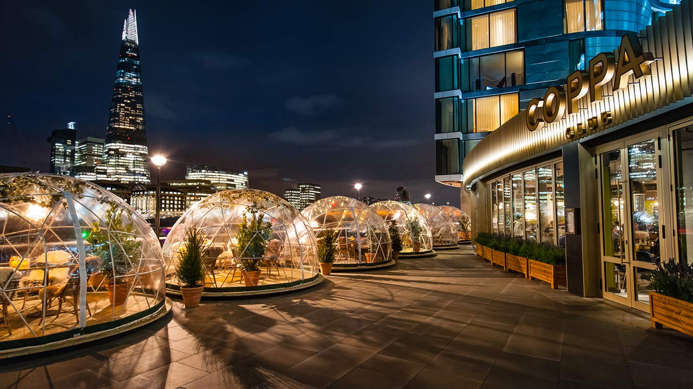

ABOUT
Coppa Club is a place for eating, drinking, meeting and unwinding.
Built around a central, brass bar that's open on all-sides, Coppa Club has a raised lounge for working and winding down, a 250-cover restaurant with a marble herringbone floor, and a café with booths and a fireplace. Outside, there's a large, south-facing terrace that catches the sun all day. All our seating is designed to make the most of our view over the river.
Our menu focuses on thoughtful, unfussy, European food from small plates and snacks to grilled mains, sourdough pizzas and healthy salads. There's a wide selection of breakfast and brunch dishes and the bar serves carefully-chosen wines, beers and classic cocktails as well as new creations.
We are open from early morning until late at night, seven days a week.
Drop in for breakfast and stay for dinner. No-one outstays their welcome.
Coppa Club, 3 Three Quays Walk,
Lower Thames Street, London, EC3R 6AH
020 7993 3827
MENUS
We start early, with a breakfast menu including juices, pastries,
pancakes, all kinds of eggs and
freshly-roasted coffee. At 11.30am, we switch to our all-day menu.
POWERED BY designmynight
We've installed eight giant igloos on our terrace
to make the most of our view over the river.
The igloos are available to book throughout the day
from breakfast through to dinner for up to a
maximum of 8 people, all bookings under 6
people will be sharing with other guests.
Bookings can be made online only and are
available until 31st March. We still leave some
igloos for walk-ins in case your requested day
and time is already taken, so feel free to drop in
and have a drink at the bar as you wait.

LOCATION
Coppa Club, 3 Three Quays Walk,
Lower Thames Street, London, EC3R 6AH
Monday to Thursday 7.30am – 11pm
Friday 7.30am – 12am
Saturday 9am – 12am
Sunday 9am – 10.30pm
Monday to Saturday until 11pm
Sunday until 10pm
JOIN US
Like what we do? Come and work for us…
We're looking for bright,
motivated people to join our team.
recruitment@coppaclub.co.uk